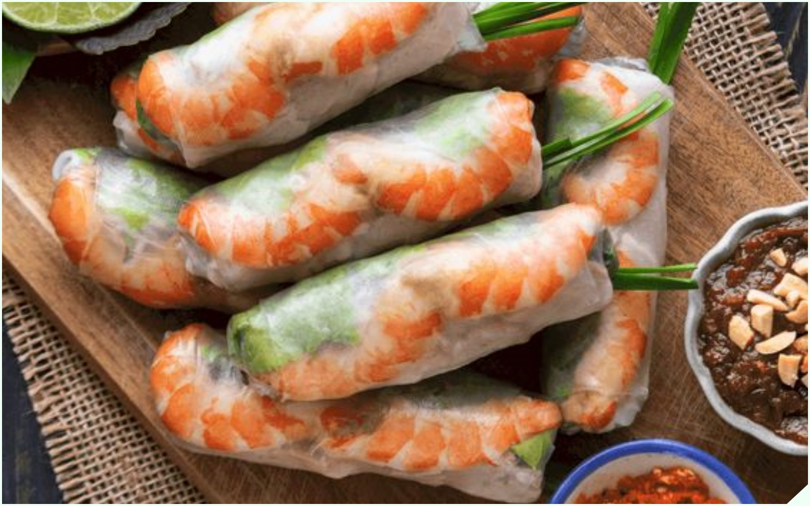

Gỏi cuốn

Gỏi cuốn luôn làm một trong cái tên vô cùng sáng giá trong danh sách tinh hoa ẩm thực Việt và những đặc trưng vùng miền khác nhau. Dù vậy thì món ăn này vẫn luôn nhận được đông đảo sự mến mộ từ khách du lịch quốc tế và trở thành một trải nghiệm không thể bỏ qua khi đến với mảnh đất chữ S này.
Quay lại Thực đơn